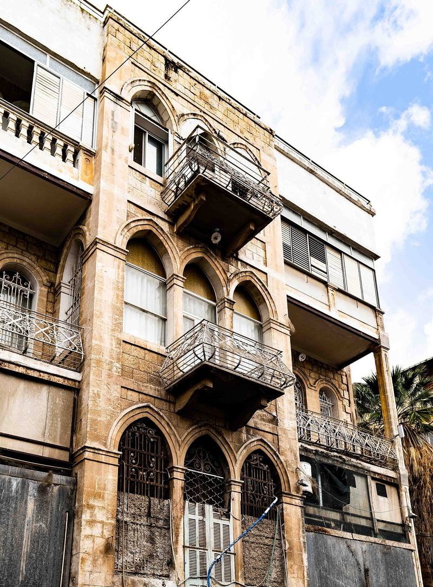
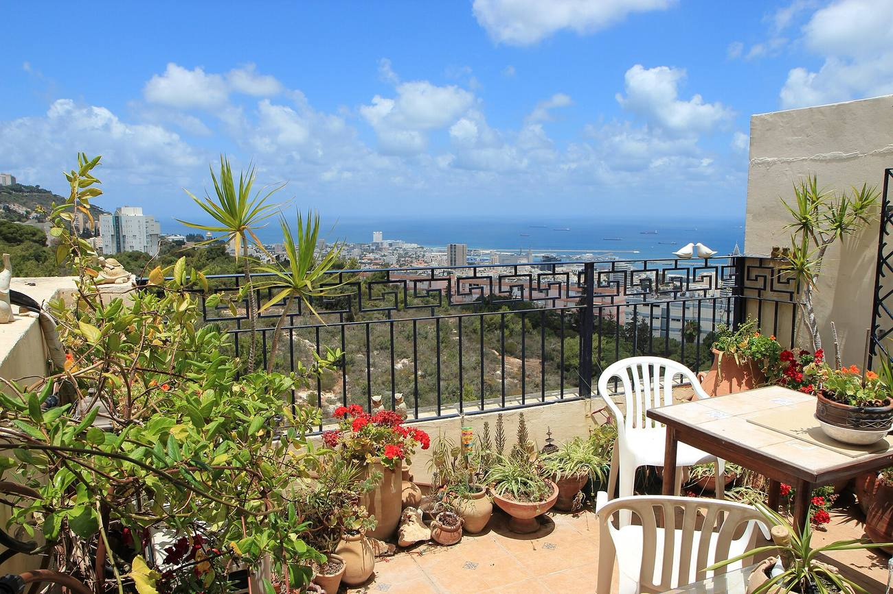
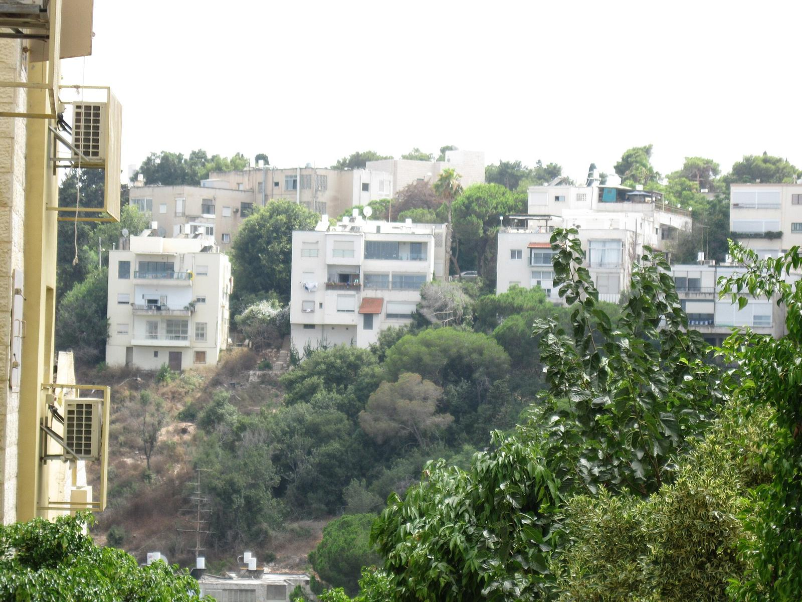
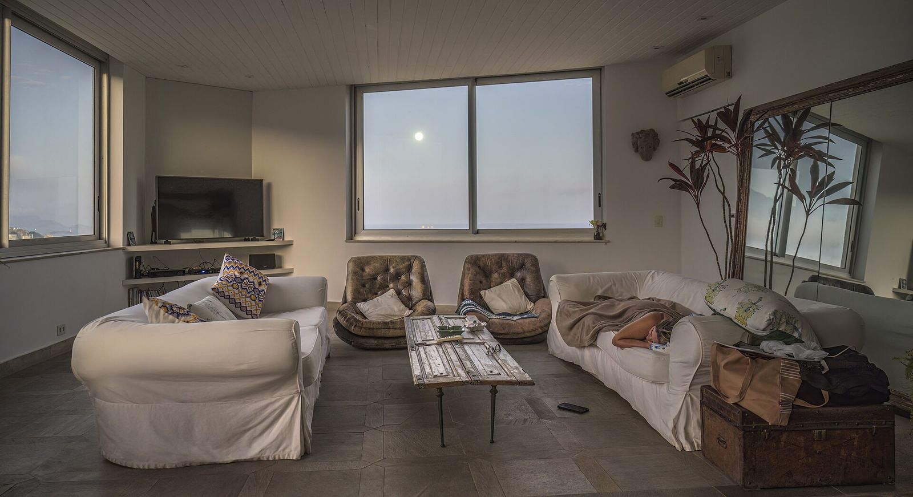
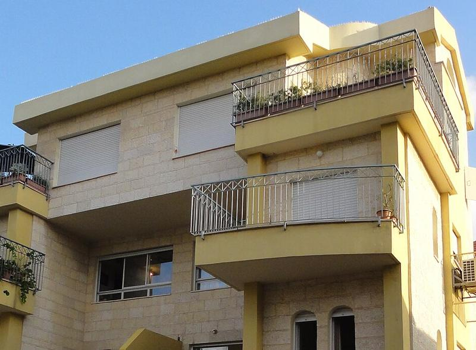
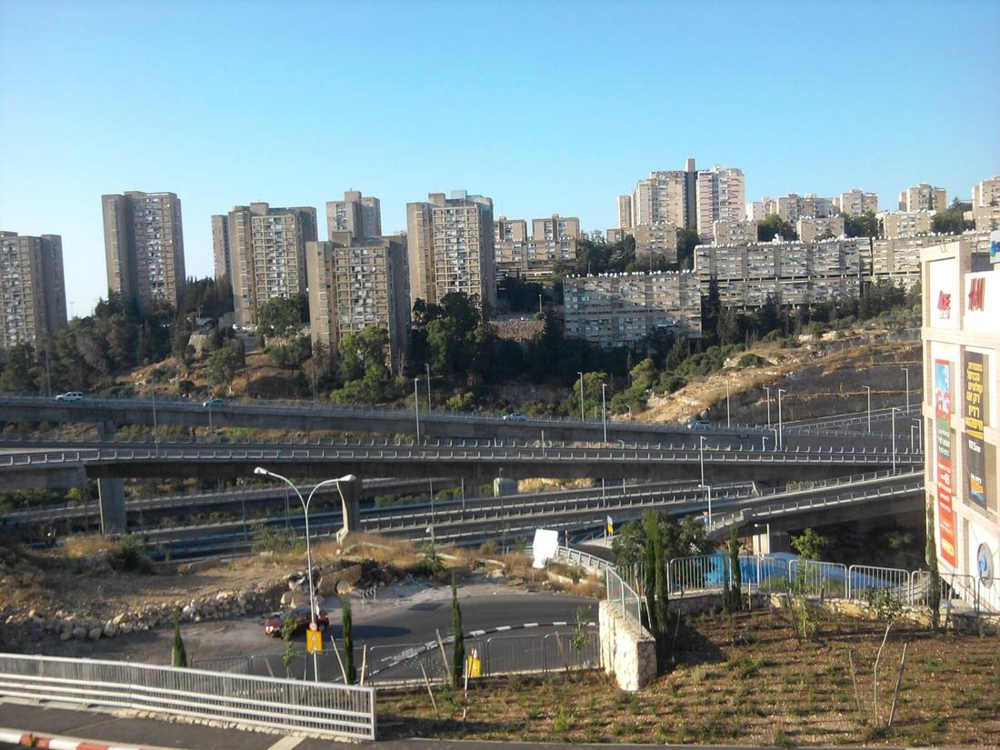

השכרהRenting
לבעלי דירות שרוצים להשכיר, ולמי שמחפש דירה לשכור.For owners letting a flat, and for people looking for one to rent.
קונספט לדוגמה שנבנה עבור שיינר נכסים · זה אינו האתר הרשמי של העסקA sample concept built for Shainer Nekasim · This is not the business’s official website
שיינר נכסים – אלי שיינר. תיווך, שיווק וייעוץ נדל״ן בחיפה: השכרה ומכירה של דירות.Shainer Nekasim – Eli Shainer. Real-estate brokerage, marketing and advice in Haifa: apartments to rent and to sell.
השכרה ומכירה של דירות בעיר, מרחוב חוחית 3.Renting and selling apartments across the city, from 3 Hoochit Street.

“מילה שלו זו מילה.”“His word is his word.”


“יודע להתאים לך את הנכס המתאים ולהצליח לסגור עיסקה המתאימה ל2 הצדדים.”“He knows how to match you with the right property and close a deal that suits both sides.”

לבעלי דירות שרוצים להשכיר, ולמי שמחפש דירה לשכור.For owners letting a flat, and for people looking for one to rent.

ליווי במכירת דירה בחיפה.Guidance through selling a flat in Haifa.

שיחה על הנכס, על המחיר ועל הצעד הבא.A conversation about the property, the price and the next step.
אלי שיינר הוא ללא ספק אחד המתווכים הטובים שפגשנו. לאחר שכמה מתווכים ניסו להשכיר עבורנו נכס ללא הצלחה, הגיע אלי עם המקצועיות והקסם הייחודי שלו, והשכיר את הנכס במהירות, בהגינות ובתנאים מצוינים.
Eli Shainer is without doubt one of the best brokers we’ve met. After several brokers tried to rent out a property for us without success, Eli came with his professionalism and his own charm, and rented it quickly, fairly and on excellent terms.
רוצה להמליץ מכל הלב על אלי שיינר שליווה אותי במכירת הדירה בצורה הכי מקצועית, נעימה ורגועה שאפשר לבקש… מהרגע הראשון הרגשתי שיש על מי לסמוך.
I warmly recommend Eli Shainer, who guided me through selling my flat in the most professional, pleasant and calm way you could ask for… From the first moment I felt there was someone to rely on.
אלי שיינר מתווך אמין ומקצועי. מילה שלו זו מילה. יודע להתאים לך את הנכס המתאים ולהצליח לסגור עיסקה המתאימה ל2 הצדדים. ממליץ בחום.
Eli Shainer is a reliable, professional broker. His word is his word. He knows how to match you with the right property and close a deal that suits both sides. Warmly recommended.
אחרי מספר עסקאות בחיי פעם ראשונה אני יכול להעיד על מתווך שהוא בנאדם, אמין, ישר, הגון, מילה אצלו זה מילה… בלי אותיות קטנות, הכל על השולחן.
After several deals in my life, for the first time I can vouch for a broker who is a mensch: reliable, straight, decent, his word is his word… no small print, everything on the table.
אלי הוא בחור מיוחד ומתווך מאוד מוכשר. הוא יודע להתאים את הבית הנכון למשפחה הנכונה… הוא מקצועי, אמין וגם איש שיחה נעים. ממליץ בחום.
Eli is a special guy and a very talented broker. He knows how to match the right home to the right family… He’s professional, reliable and good company to talk to. Warmly recommended.
תיווך, שיווק וייעוץ נדל״ן: השכרה ומכירה של דירות בחיפה.Real-estate brokerage, marketing and advice: renting and selling apartments in Haifa.
ברחוב חוחית 3 בחיפה, בטלפון 050-537-0312 ובוואטסאפ באותו מספר.At 3 Hoochit Street, Haifa, on 050-537-0312, and on WhatsApp at the same number.
ראשון עד חמישי 9:00–23:00 (שלישי עד 23:30), שישי 9:00–16:30. בשבת סגור.Sunday to Thursday 9:00–23:00 (Tuesday until 23:30), Friday 9:00–16:30. Closed on Saturday.
אם יש לכם דירה: כמה חדרים, איפה, ואם היא להשכרה או למכירה. אם אתם מחפשים: אותו הדבר, רק הפוך. הטופס למעלה כותב את זה בשבילכם.If you have a flat: how many rooms, where, and whether it’s to rent or to sell. If you’re looking: the same, the other way round. The form above writes it for you.